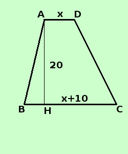

|
sviluppo Risolvere il seguente problema Calcolare le misure delle basi di un trapezio sapendo che la base maggiore supera la minore di 10 cm, l'altezza e' di 20 cm e l'area di 200 cm2 ipotesi: la base maggiore supera la minore di 10 cm l'altezza e' di 20 cm l'area e' di 400 cm2 (area = somma delle basi per altezza diviso 2) tesi: trovare la misura delle basi  lunghezza base minore = AD = x lunghezza base maggiore = BC = x + 10 cm misura dell'altezza = AH = 20cm conosco il valore dell'area
sostituisco ai segmenti i loro valori in x ed in numeri
sommo dentro parentesi
calcolo il prodotto
minimo comune multiplo
moltiplico per 2 per eliminare i denominatori (2° principio di equivalenza) 40x + 200 = 400 Porto il numero dopo l'uguale 40x = 400 - 200 sommo 40x = 200 applico il secondo principio per trovare la x
x = 5 lunghezza base minore = AD = x = 5 cm lunghezza base maggiore = DC = x + 10 cm = 15 cm E' buona norma controllare sempre che, grosso modo, le dimensioni relative nella figura fatta corrispondano al risultato (cioe' in questo caso che le misure della base minore, della base maggiore e dell'altezza grosso modo si corrispondano nella figura). In caso contrario, prima di consegnare il compito rifare la figura |